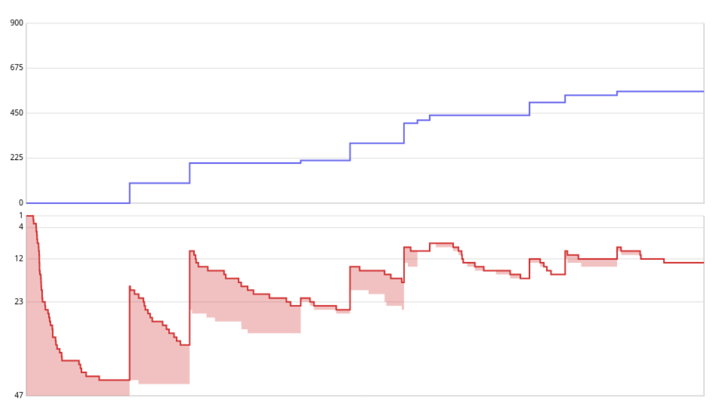

2021-NHSPC
最後一次的全國賽。
去年四等一連三等獎都沒有真的讓我很挫折，我很害怕今年又發生相同的事，所以最大目標就是拿到三等獎以上。
賽前
今年從師大改到了清大舉辦，可是多了一堆超怪的規定，比如說不能帶自己文具只能使用他們給原子筆跟紙，所以當你想用尺劃線或者想用立可帶把你寫錯的東西修改一下都沒辦法。
而且不能吃自己的食物，所以賽前買的一堆巧克力通通都沒辦法吃，如果是去年全國賽或者是像選訓內，外面有一堆東西可以吃就算了，清大這邊給的食物就只有豆乾跟麵包之類的，五個小時的比賽連個能夠快速補充血糖的東西都沒有= =;
第一小時
開場先遵循策略，把 vimrc 跟 defaut code 打完，然後就把題目全部看過一次。
題本超級無敵厚，有 9 題，而且每一題都佔好幾頁。
光讀完全部題目就花了 40 分鐘，而且後來才發現到這麼多題目的比賽不該一次把題目看完，因為看到後面發現時間過去很多就會變得很煩躁，導致後面的水題也沒有馬上發現。
總之看完後就直接先把 pA 翻綠。
pA AC 0:45:46
然後看了 pB，發現可以直接點到點距離配上點到直線的距離公式。點到直線的距離公式只要先法向量把方程式弄出來就好了，可是問題來了，點到直線的距離公式到底長怎樣…
記憶中他的長相就是 $\frac{|\cdots|}{\sqrt{\text{某些東西的平方和}}}$，因為手上的參數就只有 $ax+by+c=0$ 的 $a,b,c$ 已經點 $(x,y)$ 的 $x,y$，所以開始到處亂推，最後推出一個稍微手算一些測資都正確的算式就拿來用了。
第二小時
然後發現範測還是錯，才發現要判斷垂點不在線段上，印象中肯定是簡單計幾，可是我還是想了好久才想到可以兩次內積= =;
pB AC 1:12:20
接下來就照著看 pC，但是想了大概半個小時還是沒什麼想法，後來覺得這題應該蠻難的所以就跳過了。
看了 pD 覺得應該可以二分搜，可是二分搜完變成一堆有向圖的連通塊還是不會構造，後來突然想到會不會只要有拓樸就能構造，有了這個假設就想到直接照著拓樸序就可以了。
第三小時
實作出了不少 bug，但還不算太糟。
pD 14/100 TLE 2:01:29
檢查了自己的 code 覺得沒什麼錯誤，所以覺得是被卡常了，改成不要每次蓋新圖，直接在同張圖上遍歷再慢慢檢查邊權。
pD 6/100 TLE 2:07:45
因為連 8 分子題都沒拿到了，所以就確定是卡常。
那就把邊權給 sort 然後就能適時的 break。
pD 14/100 TLE 2:12:40
常數應該比一開始每次二分搜都建圖建圖還小，可是還是沒過。
這個時候在想要不要先丟掉這題了，畢竟也在這題花了快半個小時，只是這題 86 分實在是太肥了，讓我很不想放掉他。
再想一下想到把邊權離散化再二分搜，這樣二分搜的複雜度可以從 $\mathcal{O}(\log C)$ 變成 $\mathcal{O}(\log N)$。
pD AC 2:23:19
到這邊心態已經有點小炸了，因為比賽快過半分數只有這樣，不過我先相信今年題目很難來穩住心態。
上個廁所回來後，因為 E,F 的題目真的好難理解，所以先再仔細的看過 G。
結果發現他是樹壓平裸題@@，為什麼我第一輪沒發現這件事。
pG AC 2:47:11
然後很好笑的一件事發生了，我在測範測的時候發現我怎麼輸入一筆詢問他就輸出了，後來我才發現我的 defaut code 沒有把 IO 優化叫出來@@
會不會 pD 是因為 IO 被卡常？但我已經懶得回頭測了
之後決定先往後面看，H 先寫個爆搜解來用。
pH 15/100 2:53:09
之後花一段時間想了一個構造法，然後寫完後拿來跟爆搜解對對看
pH 40/100 2:58:35
第四小時
嘗試唬爛一下第三子題
pH 40/100 3:00:58
又 claim 說肯定是拔前後綴會最優，不過寫起來頗囉唆的。
pH 40/100 3:21:51
大概看過一下 code 沒有 bug，因為不確定是少考慮 case 還是 claim 根本是錯的，剩下一個半小時我沒有時間繼續浪費在這裡了。
看了 pI 才發現感覺水水的，我第一輪到底在幹麻= =;
然後我到現在才意識到題目不是按照難度排，好好笑。
先寫個線性解確定推的式子是對的。
pI 64/100 3:42:46
然後就把式子整理一下弄成一個四階方陣。
pI AC 3:58:31
第五小時
最後一個小時，手上題目剩 C,E,F,H，因為 C, H 已經花過不少時間想過了，所以就從 E,F 下手。
我自己覺得我應該要再拿一題 AC 才會安全，所以我先從 E 開始想，結果除了第一子題以外都沒什麼想法，只好先把第一子題拿掉。
pE 19/100 4:21:30
然後又花了一點時間給自己想，只是還是沒結果。
時間快沒了只好跳去 F。
F 也是滿腦子都是背包zzz，但還是花了很多時間想，最後真的沒時間了只好把預算很少的子題拿掉。
寫完後測範測一直怪怪的，才發現自己看錯題目= =;
所以又花時間改了一些地方，改完後剩最後一分鐘看範測都過了就上傳。
pF 0/100 4:59:23

賽後
我其實蠻緊張的，因為我覺得 pF 還蠻可作的，所以我拿 0 分超級不應該。然後別人問我分數我也不知道，因為我最後時間都在搞 pF 根本沒去算每題得分。
拿到手機看了記分板發現三等當下還蠻開心的，畢竟達成了賽前目標。
但是只有那當下。
「三等終於拿到了，明年就能劍指二等」…正要這麼想著的時候，才發現自己已經是最後一年了。
從高一開始就想著三年內要拿過一次二等以上，而機會已經沒了。
接下來看著盯著記分板，什麼話都說不出來，就呆站在放置行李那邊，其他人都走了而工作人員來叫我的時候我才回神過來把行李收一收去台達館等頒獎。
之後
仔細回想著賽中，但也想不到什麼重大失誤可以讓我後悔，就只有沒做出大家都做出來的 pF 很虧而已。
可是做不出題目能後悔什麼？就只有自己太爛。
四模拿了 23/400 分後，我整個陷入最低潮。當時根本不想打開 vim，因為一打開就會想到四模的燒雞慘況。就這樣到了 APIO 前都沒什麼打 code，所以 APIO 也很理所當然的打很差。
用著學校課業的藉口讓自己躲避競程，就這樣到了暑假卻也還沒振作。
一直到開學之後才終於回想起自己還有最後一年，可是此時回過神來發現已經一堆人都用著火箭般的速度超越我，而我才剛要重新起跑。
雖然之後盡可能的照著自己步調練習，盡可能的不去看其他人。
可是每次看到別人的表現就會讓自己更害怕，壓力也就越來越大。
得到這樣的成績我也只有自責的權利，很想要怨天尤人但自己也知道不能。
昨天回到家就坐在電腦前滑著社群，曾經幾度感覺差點哭出來。
從沒想過失去了「下次再加油」的權利會是這麼痛苦。